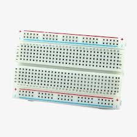
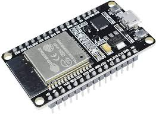
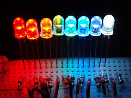

ESP32
The ESP32 is a tiny, powerful computer on a single chip. It's like a brain for electronics projects, with Wi-Fi and Bluetooth built right in. That lets you connect your ESP32 to the internet and control things wirelessly, like turning on lights or reading sensors. Very affordable and easy to use, ESP32 chips are great for beginners and experts alike to bring ideas to life!

LEDs
LEDs are tiny light bulbs that use much less energy than regular bulbs. They last for years, so you won't need to replace them as often. LEDs come in many colors, making them perfect for lighting or decoration. You'll find LEDs in electronics like phones and TVs, and even traffic lights! They're a super efficient and versatile way to light up your world!

Push Buttons
A push button is like a tiny switch. You press it down to make something happen, like turning on a light. They can be square, round, or different shapes. Push buttons are everywhere, on phones, toys, and even traffic light crossings! They make things easy to control with just a push.